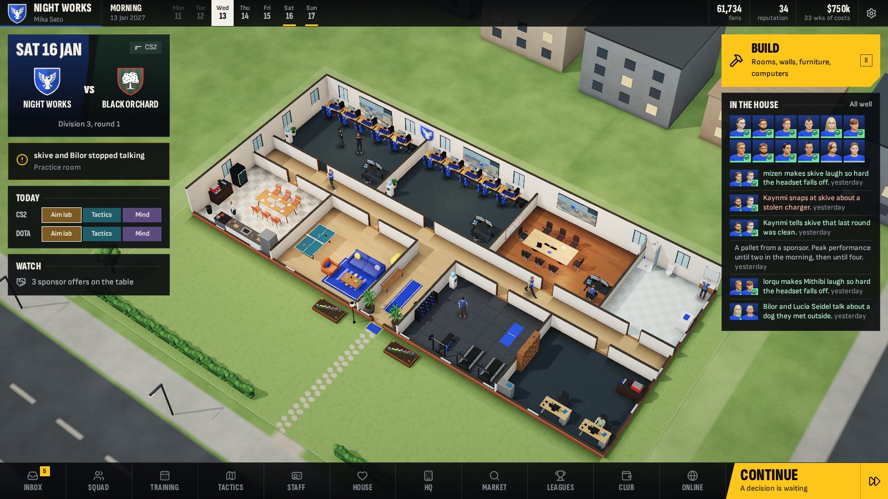
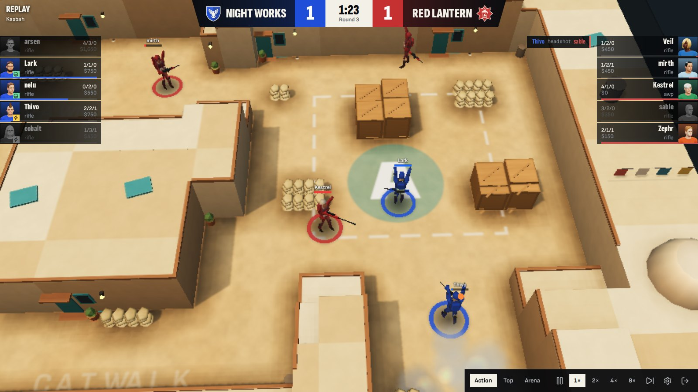

Brand book. Five play. You are the sixth.
Every team game on a stage is five people in a row, and one person standing behind them with a headset and no controller.
That person is the player. The name is the job: the sixth, the one who is not in the server. Everything in the identity repeats the picture of five in a row and one apart.
The game is called SIXTH: Esports Manager in full, SIXTH everywhere else. Never "6th", never "The Sixth".
Five upright bars are the seats on stage seen from above. The single bar behind them is the bench. Only the bench is yellow. Clear space is one seat-gap on every side; smallest size is 16 px for the mark and 96 px for the lockup. On a single-ink surface use the mono files.
Surfaces are ink, text is bone. The club colour paints everything that belongs to the club. Yellow marks only what you, the sixth, can do or have earned: the next action, the decision waiting, the sixth bar.
Headlines, names, scores, buttons, large numbers. Weight 800 to 900. Capitals for names and titles only.
Everything you read, and every label, in sentence case. Body at 15 px or larger, never below 12.5.
The logo and the lettering on wide shirts. Nowhere else.
Every portrait is the real person from the house, lit with one warm key, one cool fill and two rims in the club colours, with the face they are making right now. No drawn avatars, no icons standing in for people.
45, a hopeful
78, first division
95, the sixth bar
Quality is always shown as five bars and one more. The sixth lights above 88 and is the only decoration the game awards. Staff, equipment and crowd favourites all use it.
The header of every panel is a slab of the club colours, cut at one angle. Change the colours and the whole interface changes with them. Text on a plate is black or white, whichever passes.
One yellow button per screen. Nothing is round. One corner is cut off it. No glow, no glass. Lists share their lines; boxes do not sit inside boxes.


Real proportions, real faces, soft edges, materials you can name. One warm sun, contact shadows, a little film in the colours. Team colour appears on shirts, trims and rings, never as a tint over everything. Effects are short and bright, then gone.
| Say | Not |
|---|---|
| One injury means a stand-in. | Warning! Your bench depth is insufficient. |
| Take the stage | Start Match Simulation |
| Reputation, division and contract length all move the number. | Unlock better negotiations with premium reputation. |
| The hall is empty. For now. | No trophies found. |
Dry, warm, short. A person who has been in the building for years. It tells you what a button does before you press it and what happened afterwards. It never cheers for itself.
Panels slide 26 px and settle in 220 ms. The camera never cuts inside the building; it walks. In a match it may cut only between rounds. With reduced motion on, everything lands at once.
Sound is synthesised, so it can follow the game. The building has a slow four-chord loop on electric piano. Matches have a pulse whose filter opens with the scoreline. Yellow actions make the only rising two-note sound.
The brand steps back wherever a club appears. Crests are built from ten shapes, eleven fields and sixty-odd emblems. Shirts from twelve patterns, three collars, three sleeves and three letterings. Our mark never sits next to a crest smaller than itself, and never on a shirt.